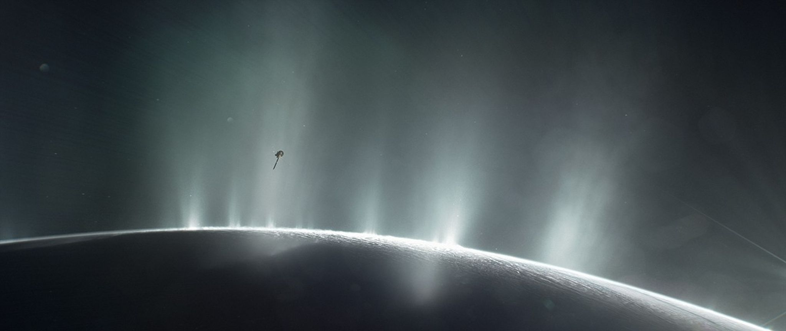

AstroSpace
AstroSpaceNuevos indicios de actividad oceánica bajo la helada superficie de Encélado
Análisis de datos de sondas orbitales sugieren que el satélite de Saturno mantiene procesos hidrotermales más complejos de lo pensado.

Fuente: NasaEncélado, la pequeña luna helada de Saturno famosa por sus imponentes géiseres polares, continúa sorprendiendo a los planetólogos. Una revisión exhaustiva de los datos recogidos durante las fases finales de la misión Cassini ha revelado concentraciones de compuestos orgánicos complejos en el penacho de vapor que brota del océano subterráneo.
Este vasto océano global de agua líquida se encuentra protegido por una gruesa costra de hielo, pero las fuerzas de marea ejercidas por Saturno generan suficiente fricción interna como para mantener fuentes de calor activas en el lecho marino.
"La presencia combinada de agua líquida, energía térmica y moléculas orgánicas convierte a Encélado en uno de los principales focos de interés para la astrobiología moderna."
Las agencias espaciales ya evalúan conceptos de misiones futuras diseñadas específicamente para sobrevolar los géiseres y recolectar muestras sin necesidad de perforar la superficie helada.